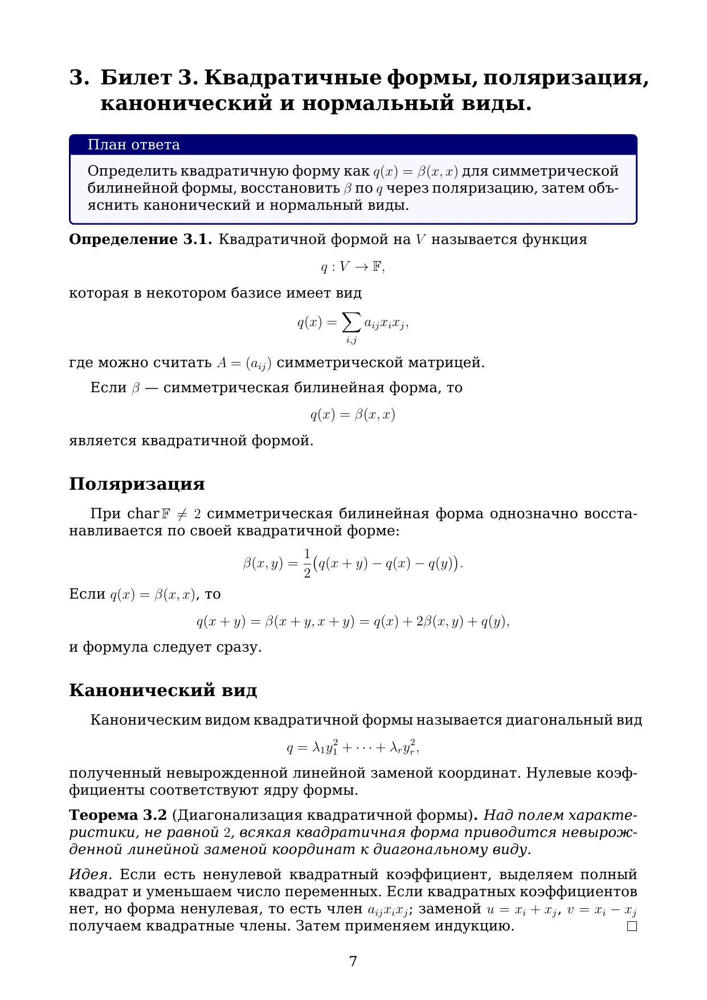
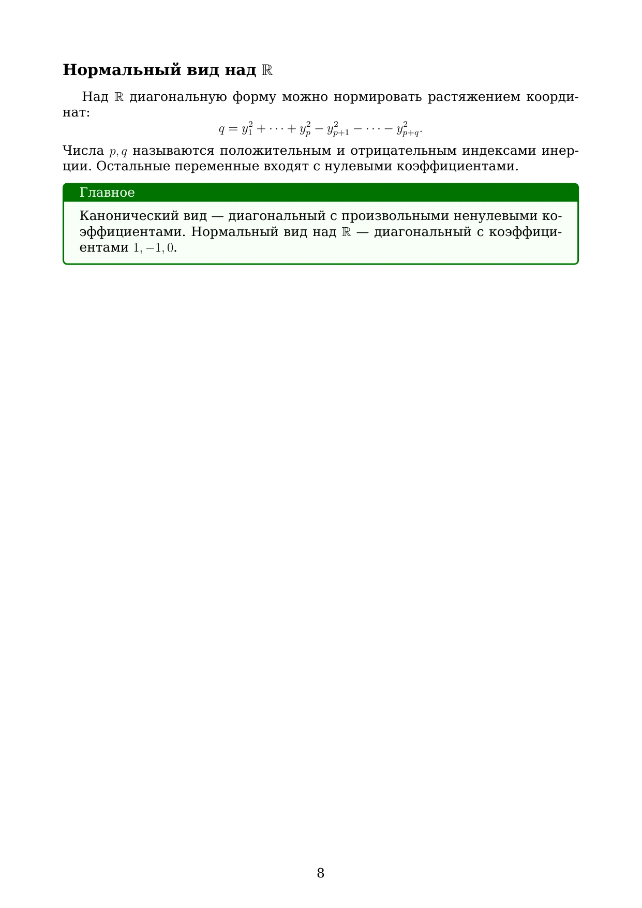

Полный конспект восстановлен из первой полной версии сайта. Вкладка «Устный ответ» содержит текущую краткую структуру ответа.
Полный конспект. Ниже показан соответствующий фрагмент отправленного PDF «Алгебра билеты v2»: он вставлен как отрендеренные страницы, поэтому формулы, индексы, дроби и греческие буквы отображаются ровно в исходной LaTeX-вёрстке. Открыть этот фрагмент в PDF.


Билет 3. Квадратичные формы, поляризация. Канонический и нормальный виды симметрической билинейной и квадратичной формы.
Раздел: Билинейные и квадратичные формы
План ответа
- Определить квадратичную форму $q(x)=\beta(x,x)$.
- Записать поляризацию и объяснить восстановление симметрической формы.
- Дать канонический вид: сумма квадратов с коэффициентами.
- Дать нормальный вид и связь с инерцией.
Основные определения и факты
Квадратичная форма связана с симметрической билинейной формой через $q(x)=\beta(x,x)$.
Поляризация над полем характеристики не 2 восстанавливает форму: $\beta(x,y)=\frac12(q(x+y)-q(x)-q(y))$.
Канонический вид получается невырожденной линейной заменой координат.
Нормальный вид над $\mathbb R$: $y_1^2+\cdots+y_p^2-y_{p+1}^2-\cdots-y_{p+q}^2$.
Ключевые формулы
Квадратичная форма
$q(x)=\beta(x,x)$
Поляризация
$\beta(x,y)=\frac{q(x+y)-q(x)-q(y)}{2}$
Канонический вид
$q=\lambda_1y_1^2+\cdots+\lambda_ry_r^2$
Нормальный вид
$q=y_1^2+\cdots+y_p^2-y_{p+1}^2-\cdots-y_{p+q}^2$
Примеры
- $q(x,y)=x^2+2xy+3y^2=(x+y)^2+2y^2$ — положительно определённая форма.
- $q(x,y)=x^2-y^2$ имеет нормальный вид с одним плюсом и одним минусом.
- $q(x,y)=2xy$ после замены $u=x+y$, $v=x-y$ превращается в $q=(u^2-v^2)/2$.
Проверочные вопросы
- Как восстановить билинейную форму из квадратичной?
- Чем канонический вид отличается от нормального?
- Что означает число плюсов и минусов в нормальном виде?